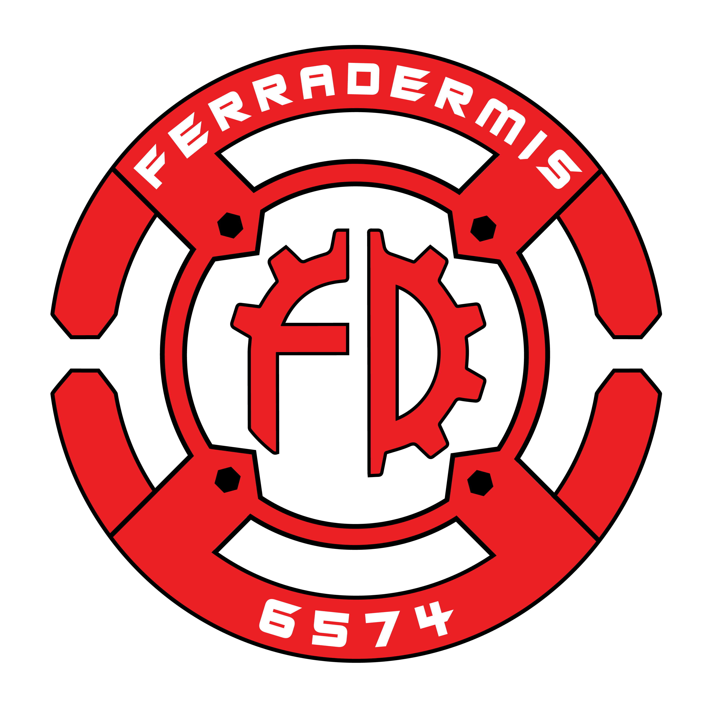

FRCsourceThank You
FRCsource exists because of the people who build, test, write, share, and improve the resources that keep the community moving. This page is for the teams, mentors, students, and contributors who made that possible.
Credits
Special Thanks
To everyone who contributed ideas, code, testing, feedback, documentation, and encouragement. This page can grow into a full supporter wall later. Special thanks to Red Raider Robotics and Ferradermis for their help during FIRST AGE.
Community Resources
FIRST teams, mentors, and public knowledge bases helped shape the tools and tutorials on this site.
Site Foundation
Built with W3.CSS, simple HTML, and a focus on fast access to programming and scouting resources.
Supporters / Logos
Replace these with supporter logos later. The cards will wrap automatically on smaller screens.
Closing Note
Thank you for using FRCsource. If this project helps even one team work faster, learn better, or share knowledge more easily, then it did its job.